Ильмень (др.-рус. Илмерь) — озеро в западной части Новгородской области. Относится к бассейну Балтийского моря. Послеледниковый водоём (на месте более ранних водных систем) с живописными берегами и многотысячелетней историей освоения.
И сегодня мы вместе пройдем вокруг этого красивейшего природного объекта, достопримечательности, которую невозможно пропустить посещая Великий Новгород.
Береговая линия озера
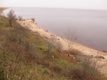
Песчаный обрыв
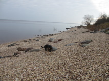
Галечный пляж
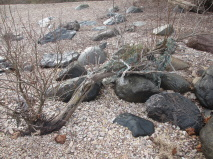
Валуны и остовы деревьев
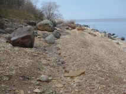
Намывные террасы на пляже
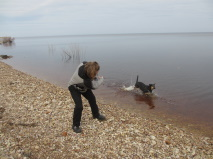
На пляже весело
Вдоль береговой линии с противоположной от города стороны озера тянутся великолепные пляжи - песчаные и галечные. Чистейшая вода и красивейшие пейзажи.
Воинское кладбище
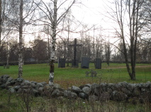
Мемориальный комплекс
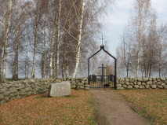
Входные ворота
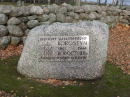
Мемориальная табличка
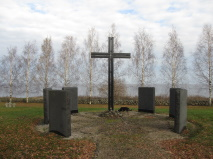
Центральная часть
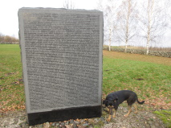
Имена погибших солдат
Во время Второй Мировой Войны в этих местах шли ожесточенные бои, особенно известной стала Новгородско-Лужская наступательная операция 1944 года, когда ценой огромных потерь с обеих сторон Великий Новгород был освобожден от оккупации немецко-фашистских войск.
На берегу озера Ильмень расположено воинское мемориальное захоронение, где покоятся останки как советских так и немецких солдат, погибших во время боев за город.
Юрьев монастырь
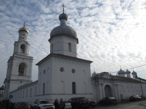
Площадь перед входом
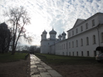
Келейный комплекс
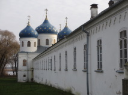
Богородичный храм
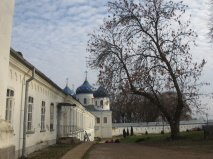
Центральная часть
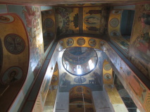
Внутреннее убранство
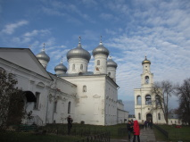
Вид на собор и колокольню
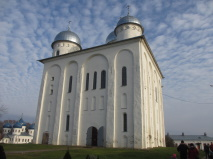
Древний собор
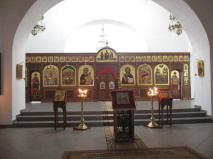
Временный иконостас
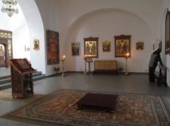
Внутреннее убранство
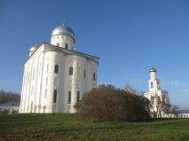
Вид на собор
В пяти километрах от Великого Новгорода, возле деревни Юрьево, в очень живописном месте, где река Волхов вытекает из озера Ильмень, находится одна из самых древних и значимых обителей России –Свято-Юрьев мужской монастырь.
В настоящее время монастырь действующий, открыт для посещения туристам и поломникам.
Музей деревянного зодчества "Витославлицы"
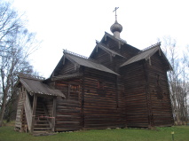
Рубленый храм
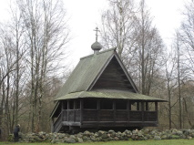
Неболшая церковь
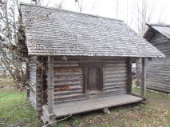
Хозяйственная простройка
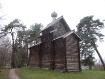
Высокий деревянный храм
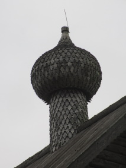
Маковка без единого гвоздя
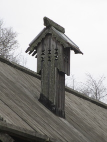
Дымоход
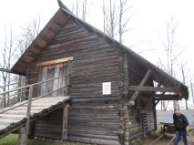
Конюшня
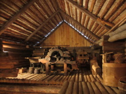
Внутри хоз. постройки
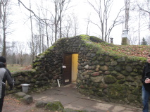
Холодная землянка
Витославлицы — один из интереснейших музеев народного деревянного зодчества. Недалеко от Великого Новгорода, на берегу озера Мячино, расположен этот небольшой, но достойный вниания музей под открытым небом.
Вся прогулка по достопримечательностям озера Ильмень с автомобильными переездами займет целый день. Посещая Великий Новгород непременно совершите это небольшое, но очень увлекательное путешествие по этим поистине красивейшим местам новгородской области.